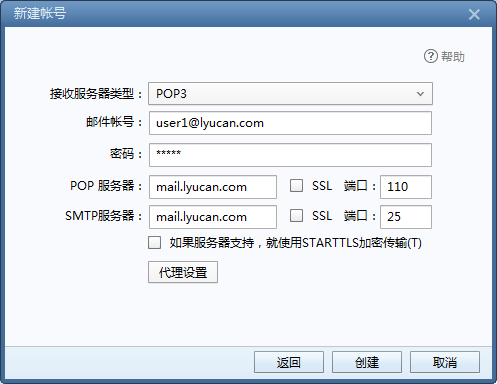

postfix+sasl进行邮件服务器的搭建
基本的步骤在另一篇笔记 postfix搭建邮件服务器中有，不再赘述，包括解析记录的添加、postfix和dovecot软件包的安装、防火墙放通等步骤；
这里仅介绍sasl的相关的配置；
配置sasl
sasl安装
[root@lyucan ~]# yum install cyrus-sasl*
为postfix开启基于cyrus-sasl的认证功能。
编辑saslauthd配置文件
[root@lyucan ~]# vim /etc/sysconfig/saslauthd
# Directory in which to place saslauthd's listening socket, pid file, and so
# on. This directory must already exist.
SOCKETDIR=/run/saslauthd
# Mechanism to use when checking passwords. Run "saslauthd -v" to get a list
# of which mechanism your installation was compiled with the ablity to use.
#MECH=pam
MECH=shadow ###这里修改成shadow，基于本地用户密码进行认证
# Additional flags to pass to saslauthd on the command line. See saslauthd(8)
# for the list of accepted flags.
FLAGS=
[root@lyucan ~]# vim /etc/sasl2/smtpd.conf
pwcheck_method: saslauthd
mech_list: plain login ##按照这样修改
启动saslauthd
[root@lyucan ~]# systemctl enable saslauthd.service
Created symlink from /etc/systemd/system/multi-user.target.wants/saslauthd.service to /usr/lib/systemd/system/saslauthd.service.
[root@lyucan ~]# systemctl restart saslauthd.service
验证是否能通过本地用户密码来进行认证
[root@lyucan sasl2]# testsaslauthd -u admin -p passwd
0: NO "authentication failed"
如果失败，可能是由于selinux导致的，将selinux关闭或者放通规则
[root@lyucan sasl2]# setsebool -P allow_saslauthd_read_shadow 1 ##放通selinux规则
[root@lyucan sasl2]# testsaslauthd -u user1 -p user1
0: OK "Success." ##返回ok
验正postfix是否支持cyrus风格的sasl认证
[root@lyucan ~]# postconf -a
cyrus ##有这个则正常
dovecot
配置postfix
修改postfix的main.cnf配置文件
[root@lyucan ~]# cat -b /etc/postfix/main.cf | grep -v '#' | grep -v ^$
29 queue_directory = /var/spool/postfix
33 command_directory = /usr/sbin
38 daemon_directory = /usr/libexec/postfix
43 data_directory = /var/lib/postfix
53 mail_owner = postfix
69 myhostname = mail.lyucan.com
76 mydomain = lyucan.com
92 myorigin = $mydomain
107 inet_interfaces = all
109 inet_protocols = all
156 mydestination = $myhostname, localhost.$mydomain, localhost, $mydomain
168 local_recipient_maps = ##这里加不加都可以
209 unknown_local_recipient_reject_code = 550
254 mynetworks = 127.0.0.0/8,127.0.0.1 ##这里就设置成本地地址
284 relay_domains = $mydestination ##这里加上转发的地址
365 alias_maps = hash:/etc/aliases
375 alias_database = hash:/etc/aliases
395 home_mailbox = Maildir/
396
503
542
564 debug_peer_level = 2
580 debugger_command =
581 PATH=/bin:/usr/bin:/usr/local/bin:/usr/X11R6/bin
582 ddd $daemon_directory/$process_name $process_id & sleep 5
608 sendmail_path = /usr/sbin/sendmail.postfix
612 newaliases_path = /usr/bin/newaliases.postfix
616 mailq_path = /usr/bin/mailq.postfix
621 setgid_group = postdrop
624 html_directory = no
627 manpage_directory = /usr/share/man
631 sample_directory = /usr/share/doc/postfix-2.10.1/samples
634 readme_directory = /usr/share/doc/postfix-2.10.1/README_FILES
###这下面的都是需要新添加的配置
636 broken_sasl_auth_clients = yes
637 smtpd_client_restrictions = permit_sasl_authenticated
638 smtpd_recipient_restrictions = permit_mynetworks, permit_sasl_authenticated, reject_unauth_destination
639 smtpd_sasl_auth_enable = yes
640 smtpd_sasl_local_domain = $mydomain
641 smtpd_sasl_security_options = noanonymous
642 message_size_limit = 5242880
643 smtpd_banner = $myhostname ESMTP
重启postfix和saslauthd
[root@lyucan ~]# systemctl restart postfix.service
[root@lyucan ~]# systemctl restart saslauthd.service
验证认证登陆
创建admin用户，密码为pass
[root@lyucan ~]# useradd admin
[root@lyucan ~]# passwd admin
Changing password for user admin.
New password:
Retype new password:
passwd: all authentication tokens updated successfully.
生成用户名密码base64的密文
[root@lyucan ~]# perl -e 'use MIME::Base64; print encode_base64("admin")'
YWRtaW4=
[root@lyucan ~]# perl -e 'use MIME::Base64; print encode_base64("pass")'
ZWNobzEyMy4=
[root@lyucan ~]# telnet mail.lyucan.com 25
Trying 103.84.88.151...
Connected to mail.lyucan.com.
Escape character is '^]'.
220 mail.lyucan.com ESMTP
ehlo 163.com
250-mail.lyucan.com
250-PIPELINING
250-SIZE 5242880
250-VRFY
250-ETRN
250-AUTH PLAIN LOGIN
250-AUTH=PLAIN LOGIN
250-ENHANCEDSTATUSCODES
250-8BITMIME
250 DSN
auth login
334 VXNlcm5hbWU6
YWRtaW4=
334 UGFzc3dvcmQ6
ZWNobzEyMy4=
235 2.7.0 Authentication successful ###表示认证成功
quit
221 2.0.0 Bye
Connection closed by foreign host.
配置dovecot
下面三个配置文件均没有变化
[root@lyucan ~]# cat -b /etc/dovecot/dovecot.conf | grep -v '#' | grep -v ^$
19 protocols = imap pop3 lmtp
25 listen = *
72 dict {
75 }
79 !include conf.d/*.conf
82 !include_try local.conf
[root@lyucan ~]# cat -b /etc/dovecot/conf.d/10-auth.conf | grep -v '#' | grep -v ^$
9 disable_plaintext_auth = no
82 auth_mechanisms = plain login
100 !include auth-system.conf.ext
[root@lyucan ~]# vim /etc/dovecot/conf.d/10-ssl.conf
ssl = no
##同时注释掉下面两行配置
#ssl_cert = </etc/pki/dovecot/certs/dovecot.pem
#ssl_key = </etc/pki/dovecot/private/dovecot.pem
这里的邮件存放路径使用另外一个
[root@lyucan ~]# cat -b /etc/dovecot/conf.d/10-mail.conf | grep -v '#' | grep -v ^$
31 mail_location = maildir:~/Maildir ##这里修改下邮件存放路径
42 namespace inbox {
57 inbox = yes
71 }
143 first_valid_uid = 1000
243 mbox_write_locks = fcntl
重启dovecot
[root@lyucan ~]# systemctl restart dovecot.service
创建一个新用户用于连接
[root@lyucan ~]# useradd -s /sbin/nologin user1 ##用户不能登录系统
[root@lyucan ~]# passwd user1
Changing password for user user1.
New password:
BAD PASSWORD: The password is shorter than 7 characters
Retype new password:
passwd: all authentication tokens updated successfully.
使用foxmail连接登录

发送邮件

接收邮件
[root@lyucan new]# pwd
/home/user1/Maildir/new
[root@lyucan new]# ll
total 4
-rw-------. 1 user1 user1 3989 Apr 14 03:19 1523647178.Vfd02I13c00cM35424.lyucan.com
客户端收取后，服务器上的邮件文件就会消失